<title>Caza del Foco y lo guardado</title>
<link rel="preconnect" href="https://fonts.googleapis.com">
<link rel="stylesheet" href="https://fonts.googleapis.com/css2?family=EB+Garamond:ital,wght@0,400;0,500;1,400;1,500&family=Inter+Tight:wght@400;500;600&display=swap">
<style>
/* La misma columna de lectura que la caza del 8 de octubre: cada pregunta es un bloque con su porqué,
   sus fotos de antes y de cada opción, y la recomendación marcada. */
:root {
  --paper: #F2EDE0; --paper-2: #EAE4D4; --ink: #1F1C17; --ink-2: #4A453C; --ink-3: #6F685A;
  --line: #C9C0A8; --focus: #3E5A3A; --breathe: #A9583B; --hydrate: #4B7384;
  --display: 'EB Garamond', 'Cormorant Garamond', Georgia, serif;
  --ui: 'Inter Tight', system-ui, -apple-system, 'Segoe UI', sans-serif;
}
@media (prefers-color-scheme: dark) { :root:not([data-theme="light"]) {
  --paper: #1d1a14; --paper-2: #26211a; --ink: #EDE5D3; --ink-2: #c0b49e; --ink-3: #B2A995;
  --line: #4d4536; --focus: #9DB98F; --breathe: #E2A588; --hydrate: #9EC0CE; color-scheme: dark; } }
:root[data-theme="dark"] {
  --paper: #1d1a14; --paper-2: #26211a; --ink: #EDE5D3; --ink-2: #c0b49e; --ink-3: #B2A995;
  --line: #4d4536; --focus: #9DB98F; --breathe: #E2A588; --hydrate: #9EC0CE; color-scheme: dark; }
* { box-sizing: border-box; }
body { background: var(--paper); color: var(--ink); font: 16px/1.6 var(--ui); }
main { max-width: 1040px; margin: 0 auto; padding-inline: 16px; padding-block: 36px 96px; display: grid; gap: 8px; }
h1, h2, h3 { font-family: var(--display); font-style: italic; font-weight: 500; margin: 0; text-wrap: balance; line-height: 1.12; }
h1 { font-size: clamp(34px, 6vw, 46px); }
h2 { font-size: clamp(25px, 4vw, 31px); }
h3 { font-size: 21px; }
p { margin: 0; max-width: 68ch; }
ul { margin: 0; padding-left: 20px; max-width: 68ch; display: grid; gap: 6px; }
.meta { font-size: 12px; letter-spacing: .14em; text-transform: uppercase; color: var(--ink-3); }
.lede { color: var(--ink-2); font-size: 17px; }
.intro { display: grid; gap: 14px; padding-bottom: 20px; }
.estado { display: grid; gap: 8px; padding: 14px 18px; border-left: 3px solid var(--focus); background: var(--paper-2); border-radius: 0 10px 10px 0; color: var(--ink-2); }
.estado b { color: var(--ink); }
section { display: grid; gap: 14px; padding-block: 30px 6px; border-top: 1px solid var(--line); }
.cab { display: flex; flex-wrap: wrap; align-items: baseline; gap: 6px 14px; }
.cod { font-size: 12px; letter-spacing: .1em; text-transform: uppercase; color: var(--ink-3); }
.pide { font-size: 12px; letter-spacing: .1em; text-transform: uppercase; color: var(--breathe); font-weight: 600; }
.texto { display: grid; gap: 8px; color: var(--ink-2); }
.texto b { color: var(--ink); font-weight: 600; }
.opcion { display: grid; gap: 10px; padding-top: 6px; }
.opcion .cab h3 { color: var(--ink); }
.reco { font-size: 12px; letter-spacing: .1em; text-transform: uppercase; color: var(--focus); font-weight: 600; }
.fotos { display: grid; gap: 14px; align-items: start; }
.fotos.movil { grid-template-columns: repeat(auto-fit, minmax(150px, 230px)); }
.fotos.ancho { grid-template-columns: repeat(auto-fit, minmax(min(100%, 420px), 1fr)); }
figure { margin: 0; display: grid; gap: 6px; min-width: 0; }
figcaption { font-size: 12px; letter-spacing: .08em; text-transform: uppercase; color: var(--ink-3); }
figcaption b { color: var(--focus); font-weight: 600; }
img { display: block; width: 100%; max-width: 100%; height: auto; border: 1px solid var(--line); border-radius: 8px; background: var(--paper-2); }
code { font-size: 14px; }
a { color: var(--focus); }
</style>

<main>
  <div class="intro">
    <span class="meta">PACE · caza del Foco y lo guardado · 12 de octubre de 2026</span>
    <h1>Cuatro cosas que cambian lo que se ve</h1>
    <p class="lede">La caza del 7 de octubre no llegó a mirar el Foco ni lo que PACE guarda. Esta sí, y encontró once fallos, todos reproducidos en la app real. Siete ya están arreglados sin cambiar nada de lo que se ve. Los otros cuatro cambian la pantalla, así que aquí van con fotos de cómo está hoy y de cada opción, y con mi recomendación.</p>
    <div class="estado">
      <p><b>Ya arreglado, sin que cambie nada de lo que ves.</b></p>
      <ul>
        <li>Con PACE abierto en dos pestañas (o la app instalada y una pestaña del navegador), la que llevaba más rato abierta borraba lo que hacías en la otra: vasos, bloques de Foco, una copia importada. Y si en una pulsabas «Borrar todos mis datos», la otra los devolvía. Ahora cada pestaña ve al momento lo que guarda la otra.</li>
        <li>Con un bloque de Foco abierto en dos pestañas, pausar en una no pausaba la otra, y al terminar el bloque contaba dos veces. Ahora es un solo bloque: pausar, seguir y reiniciar se ven en las dos, y cuenta una vez, con una sola campana.</li>
        <li>En Android, si el sistema cerraba PACE con un Foco en marcha, al volver el aviso de «Foco completado» seguía programado aunque pausaras el bloque. Ahora se quita.</li>
        <li>La copia de rescate que ofrece «Tus datos» cuando algo no se pudo leer ya se puede volver a importar. Antes decía «Archivo no reconocido».</li>
      </ul>
    </div>
    <p class="texto">Las fotos de «Antes» son de la app que está ahora en la web. Las de cada opción son de la app montada con ese cambio, solo para enseñarlo: no está en ninguna versión hasta que digas que sí.</p>
  </div>

  <section>
    <div class="cab"><h2>Tocar otros minutos con el bloque en marcha</h2><span class="cod">foco-1</span><span class="pide">Elige A o B</span></div>
    <div class="texto">
      <p>Hoy, si el bloque de 25 minutos va por el minuto 20 y tocas «35» encima del aro (por ejemplo, para alargarlo), el bloque se tira sin avisar: el aro vuelve a 35:00 parado y esos 20 minutos no cuentan. Pasa igual con el bloque en pausa. Cambiar de modo en la barra de arriba ya pregunta antes desde el 8 de octubre; los minutos no.</p>
    </div>
    <div class="fotos movil">
      <figure><figcaption>Antes · 360 · tras tocar «35»</figcaption>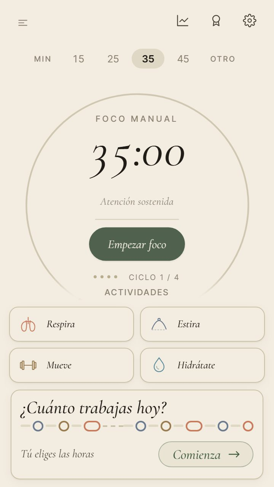</figure>
    </div>
    <div class="opcion">
      <div class="cab"><h3>A · Preguntar antes, como al cambiar de modo</h3><span class="reco">Recomendada</span></div>
      <div class="texto"><p>Tocar otros minutos con un bloque empezado pregunta «¿Cambiar a un bloque de 35 min?» con el mismo texto y los mismos botones que la barra de arriba. El verde sigue con el bloque, que es lo seguro. La recomiendo porque ya elegiste esto mismo para el cambio de modo y así las dos cosas se comportan igual.</p></div>
      <div class="fotos movil"><figure><figcaption><b>A</b> · 360</figcaption>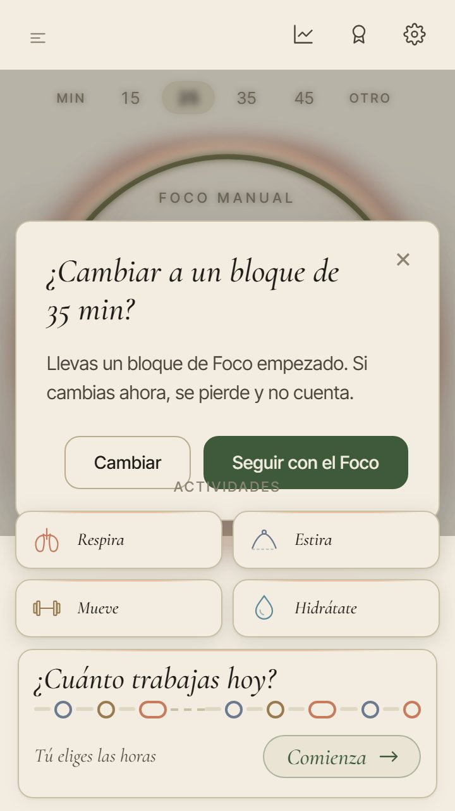</figure></div>
      <div class="fotos ancho"><figure><figcaption><b>A</b> · 1280</figcaption>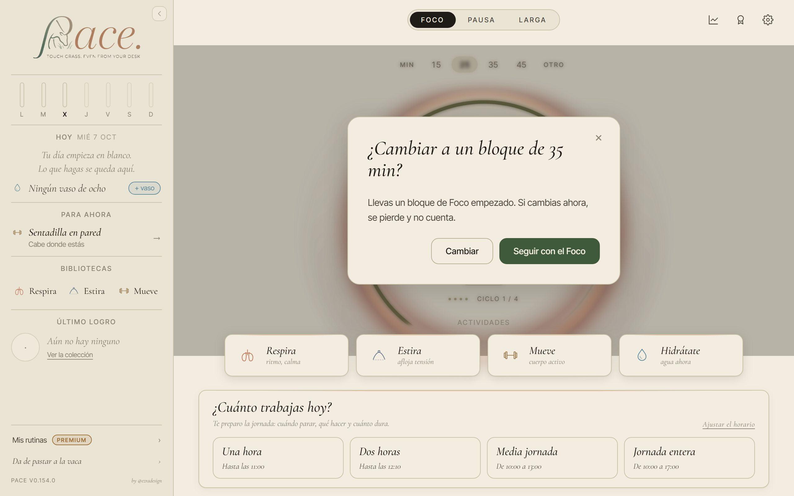</figure></div>
    </div>
    <div class="opcion">
      <div class="cab"><h3>B · Los minutos se apagan mientras hay un bloque</h3></div>
      <div class="texto"><p>Con un bloque en marcha o en pausa, los minutos se ven atenuados y no se pueden tocar. Para cambiarlos hay que terminar el bloque o pausarlo y pulsar «Reiniciar bloque». No pregunta nada, pero tampoco deja alargar un bloque.</p></div>
      <div class="fotos movil"><figure><figcaption><b>B</b> · 360</figcaption>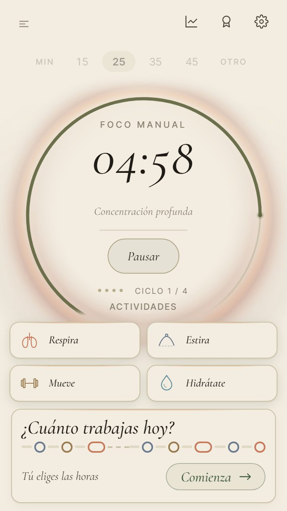</figure></div>
      <div class="fotos ancho"><figure><figcaption><b>B</b> · 1280</figcaption>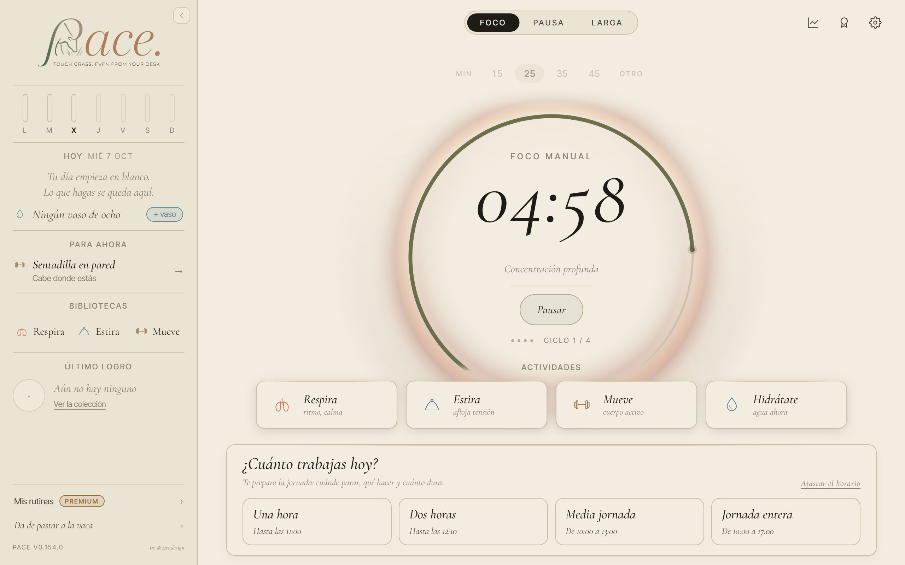</figure></div>
    </div>
  </section>

  <section>
    <div class="cab"><h2>Un bloque en pausa no sobrevive a una recarga</h2><span class="cod">foco-2</span><span class="pide">Elige A o B</span></div>
    <div class="texto">
      <p>Hoy, si pausas el bloque en 13:00 y la página se recarga, vuelve a 25:00 con «Empezar foco». Pasa al recargar, al pulsar «Hay una versión nueva» y, en Android, cuando el sistema cierra PACE mientras estás en otra app, que es lo más habitual en un móvil. Un bloque en marcha sí sobrevive; solo se pierde el que está en pausa.</p>
    </div>
    <div class="fotos movil">
      <figure><figcaption>En pausa, antes de recargar · 360</figcaption>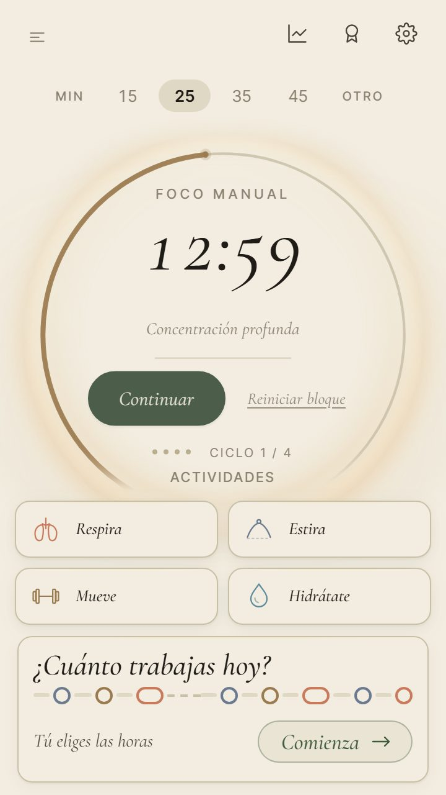</figure>
      <figure><figcaption>Antes · 360 · tras recargar</figcaption>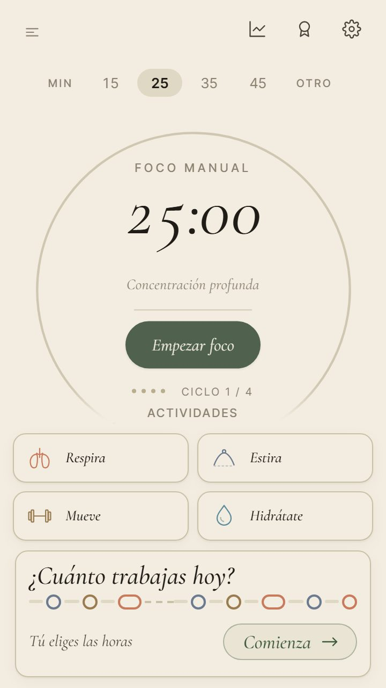</figure>
    </div>
    <div class="opcion">
      <div class="cab"><h3>A · El bloque vuelve en pausa donde lo dejaste</h3><span class="reco">Recomendada</span></div>
      <div class="texto"><p>Al volver, el aro está en pausa en el mismo minuto, con «Continuar» y «Reiniciar bloque», como antes de cerrar. Solo el mismo día: un bloque pausado ayer no vuelve, porque el día ya empezó de cero. La recomiendo porque en Android es lo que más va a pasar, y perder un bloque por mirar otra app desanima.</p></div>
      <div class="fotos movil"><figure><figcaption><b>A</b> · 360 · tras recargar</figcaption>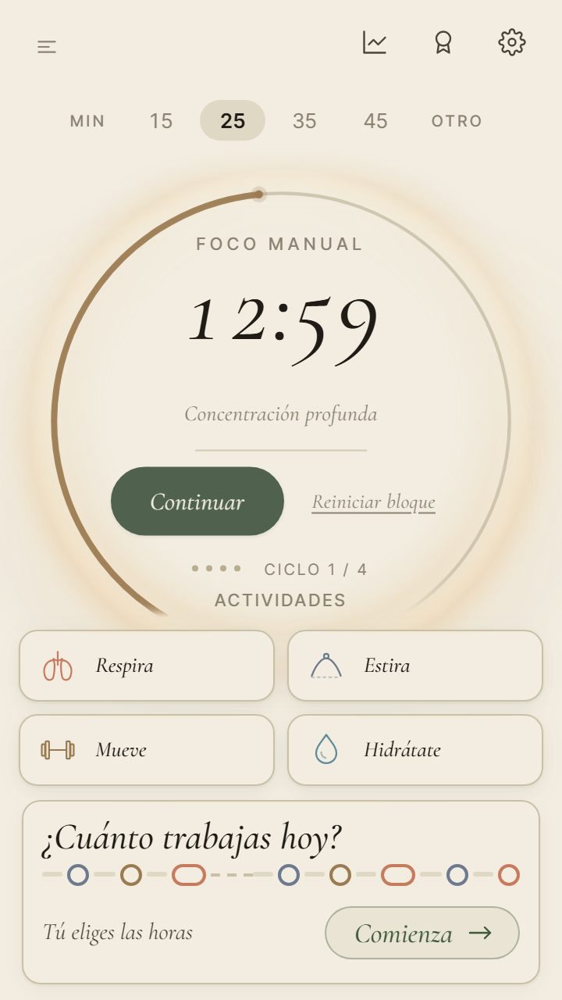</figure></div>
      <div class="fotos ancho"><figure><figcaption><b>A</b> · 1280 · tras recargar</figcaption>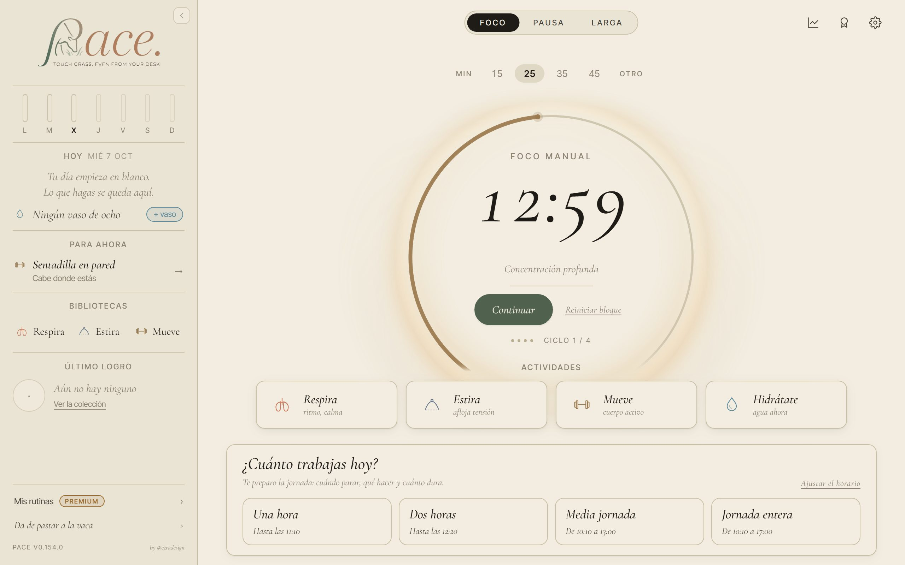</figure></div>
    </div>
    <div class="opcion">
      <div class="cab"><h3>B · Dejarlo como está</h3></div>
      <div class="texto"><p>El bloque en pausa se pierde al recargar, como decidimos hace tiempo, cuando aún no había Android.</p></div>
    </div>
  </section>

  <section>
    <div class="cab"><h2>Un bloque que termina con PACE cerrado no cuenta</h2><span class="cod">foco-3</span><span class="pide">Elige A o B</span></div>
    <div class="texto">
      <p>Hoy, si empiezas un bloque y cierras la pestaña (o Android cierra la app), y vuelves cuando ya habría terminado, el aro está a 25:00 y el bloque no cuenta, aunque en Android el aviso del sistema dijo «Foco completado». En cambio, si la pestaña sigue abierta de fondo esos mismos minutos, el bloque sí cuenta al volver. Así que hoy la misma ausencia cuenta o no según si el navegador mantuvo viva la pestaña.</p>
    </div>
    <div class="fotos movil">
      <figure><figcaption>Antes · 360 · al volver</figcaption></figure>
    </div>
    <div class="fotos ancho">
      <figure><figcaption>Antes · 1280 · al volver</figcaption>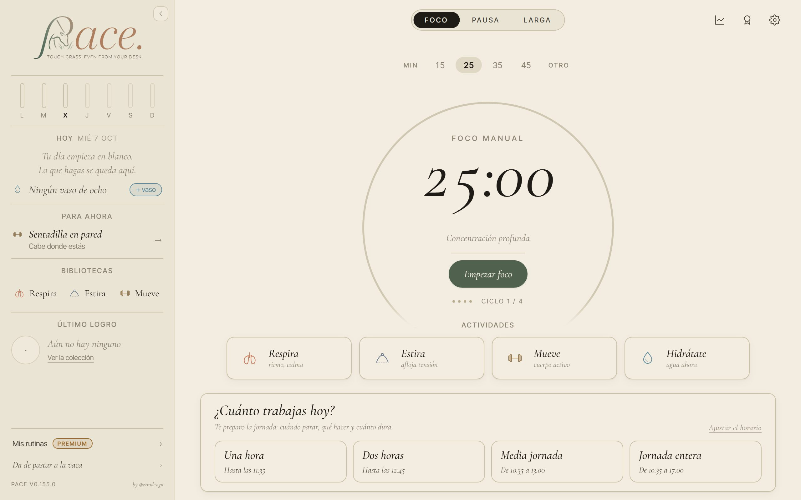</figure>
    </div>
    <div class="opcion">
      <div class="cab"><h3>A · Cuenta, como cuando la pestaña sigue abierta</h3><span class="reco">Recomendada</span></div>
      <div class="texto"><p>Si el bloque terminó hoy mientras PACE estaba cerrado, al volver cuenta y se abre la pausa, igual que cuando la pestaña sigue abierta. Al cerrar la pausa, el aro dice «Empezar otro ciclo» y «Hoy» suma los 25 minutos. Si terminó ayer no cuenta, porque el día ya cambió. La recomiendo porque así el aviso de Android dice la verdad y la cuenta no depende del navegador.</p></div>
      <div class="fotos movil">
        <figure><figcaption><b>A</b> · 360 · al volver</figcaption>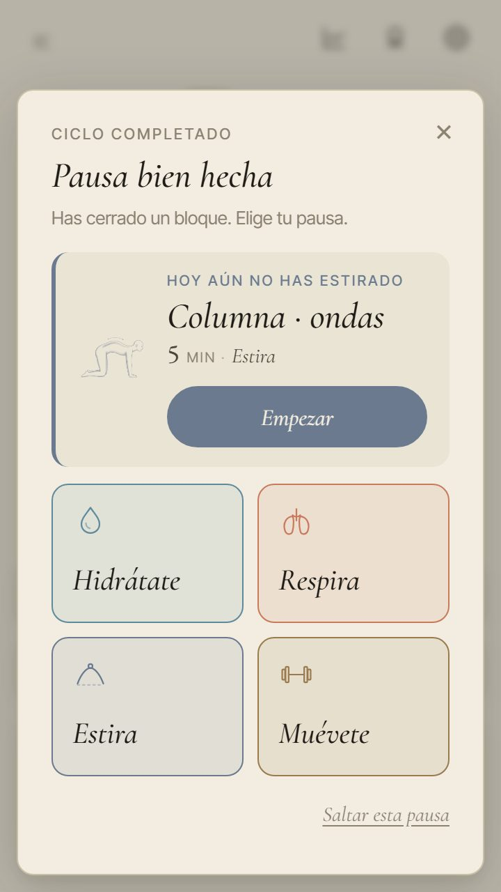</figure>
        <figure><figcaption><b>A</b> · 360 · tras cerrar la pausa</figcaption>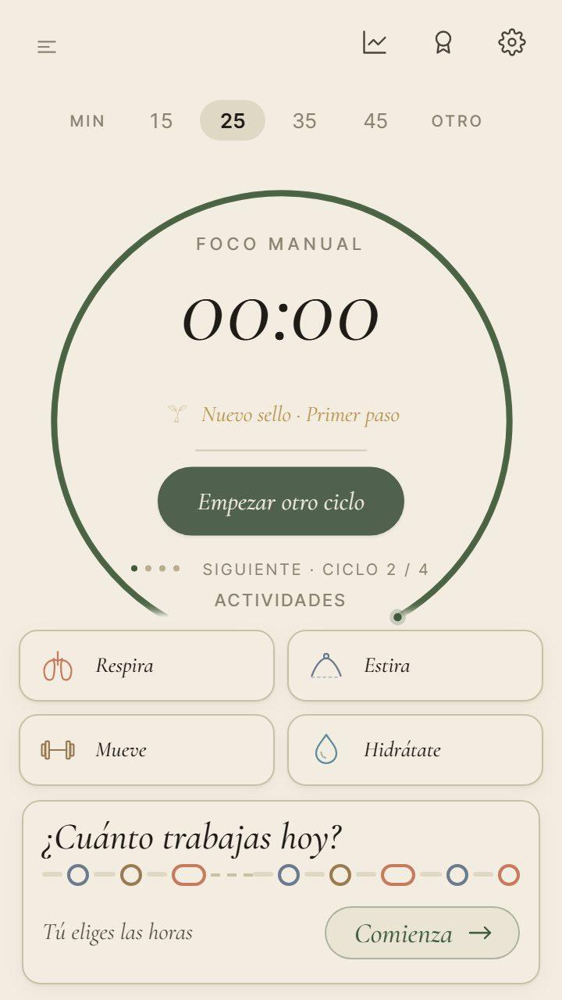</figure>
      </div>
      <div class="fotos ancho">
        <figure><figcaption><b>A</b> · 1280 · al volver</figcaption>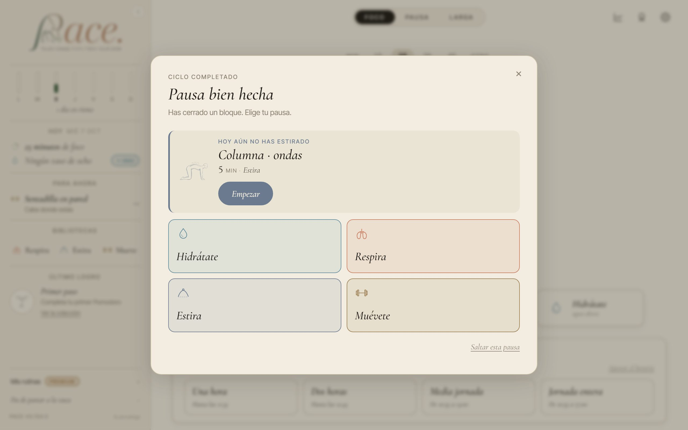</figure>
        <figure><figcaption><b>A</b> · 1280 · tras cerrar la pausa</figcaption>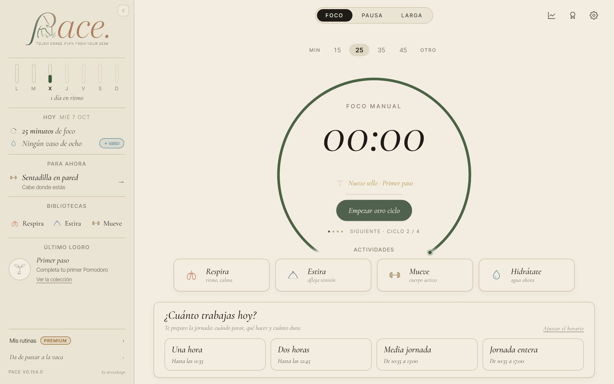</figure>
      </div>
    </div>
    <div class="opcion">
      <div class="cab"><h3>B · Dejarlo como está</h3></div>
      <div class="texto"><p>Un bloque que termina con PACE cerrado no cuenta, como decidimos hace tiempo («no se cuentan minutos que no has visto»), aunque con la pestaña abierta sí cuenta.</p></div>
    </div>
  </section>

  <section>
    <div class="cab"><h2>Cuando el navegador no deja guardar, nadie lo dice</h2><span class="cod">estado-5</span><span class="pide">Elige A o B</span></div>
    <div class="texto">
      <p>Si el almacenamiento del navegador está lleno o bloqueado (pasa en algunos modos privados o con las cookies bloqueadas para el sitio), PACE sigue funcionando pero no guarda nada, y no lo dice. Sumas dos vasos, los ves, recargas y hay cero. Es poco probable: PACE ocupa muy poco y el límite es grande. Pero si pasa, se pierde un día entero sin aviso.</p>
    </div>
    <div class="fotos movil">
      <figure><figcaption>Antes · 360 · con dos vasos sin guardar</figcaption>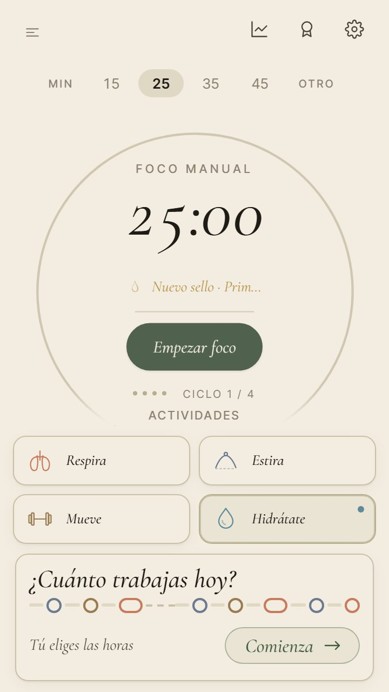</figure>
    </div>
    <div class="opcion">
      <div class="cab"><h3>A · Un aviso abajo, una vez</h3><span class="reco">Recomendada</span></div>
      <div class="texto"><p>La primera vez que algo no se puede guardar, sale abajo una barra como la de «Hay una versión nueva»: «Este navegador no deja guardar: lo que hagas se perderá al cerrar PACE», con «Exportar una copia» (que sí funciona) y «Entendido». Sale una vez por visita. La recomiendo porque es tranquila y deja salvar el día con un toque.</p></div>
      <div class="fotos movil"><figure><figcaption><b>A</b> · 360</figcaption>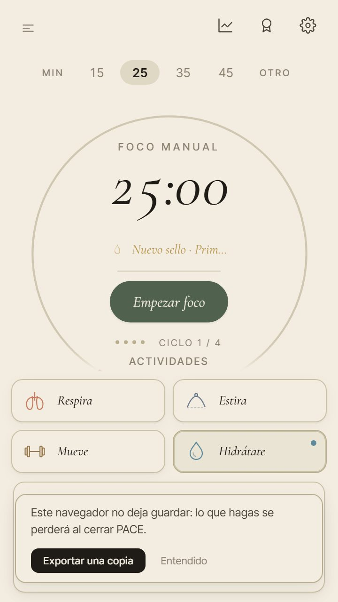</figure></div>
      <div class="fotos ancho"><figure><figcaption><b>A</b> · 1280</figcaption>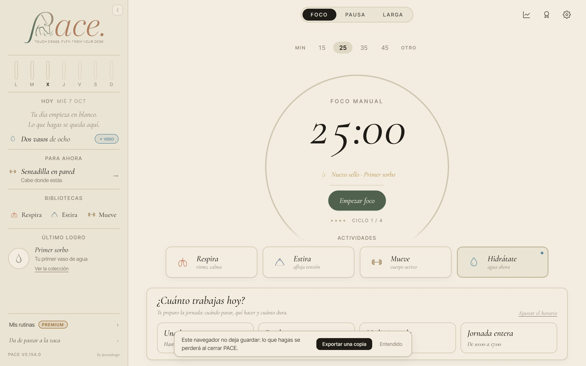</figure></div>
    </div>
    <div class="opcion">
      <div class="cab"><h3>B · De momento nada</h3></div>
      <div class="texto"><p>Como es tan poco probable, se deja para después de v1 y queda apuntado.</p></div>
    </div>
  </section>
</main>
